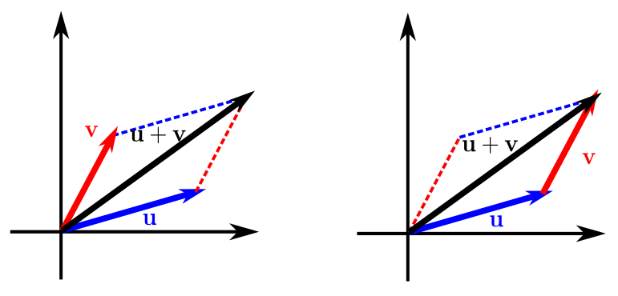
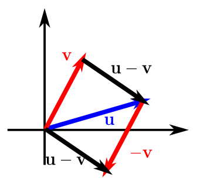

Vectores en el plano
Contents
1.1. Vectores en el plano#
1.1.1. Definición de vector en el plano#
Muchas cantidades en geometría y física (área, volumen, temperatura, masa, tiempo,…) se pueden caracterizar por un único número real que se escala a las unidades de medida adecuadas (\(m^2\), \(m^3\), \(^\text{o}\)C,…). Se llaman magnitudes escalares, y al número real asociado con ellas se le llama escalar.
Sin embargo, otras cantidades (fuerza, velocidad, aceleración,…) implican magnitud y dirección y no pueden caracterizarse completamente por un solo número real: necesitaremos los vectores (y, más adelante, en algunos casos, las matrices).
De momento, vamos a centrarnos en dar una correcta definición para estas cantidades en el plano, \(\mathbb{R}^2\).
Definition
Llamaremos vector a un segmento en el plano, que estará caracterizado por el ángulo que forma con el eje \(OX\) (dirección) y por su longitud (o magnitud).
Suele representarse con una flecha con un punto inicial y un punto final en el plano, aunque esta representación puede dar lugar a confusiones, ya que dos segmentos con la misma longitud y dirección, aunque partan de puntos diferentes, definen el mismo vector.
{kind=link}
A lo largo del presente libro denotaremos los vectores mediante letras minúscula y en negrita (\(\mathbf{n}\), \(\mathbf{u}\), \(\mathbf{v}\),… ), aunque cuando se escriben a mano suelen denotarse con una flecha (\(\vec{n}\), \(\vec{u}\), …).
Vamos a ver un ejemplo para que nos quede claro que dos segmentos con la misma dirección y longitud definen el mismo vector.
Example
Comprueba que, para los puntos \(P=(0,0)\), \(Q=(3,2)\), \(R=(1,2)\) y \(S=(4,4)\), los segmentos \(\vec{PQ}\) y \(\vec{SR}\) definen el mismo vector.
Vamos a comprobar que tienen la misma longitud y la misma pendiente (lo que implica que tendrán la misma dirección):
Longitud \(\vec{PQ}\): \(\sqrt{(3-0)^2+(2-0)^2} = \sqrt{13}\).
Longitud \(\vec{RS}\): \(\sqrt{(4-1)^2 + (4-2)^2} = \sqrt{13}\).
Pendiente que forma \(\vec{PQ}\) con la recta \(OX\): \(\frac{2-0}{3-0} = \frac{2}{3}\).
Pendiente que forma \(\vec{RS}\) con la recta \(OX\): \(\frac{4-2}{4-1} = \frac{2}{3}\).
{kind=link}
Una vez aclarado que hay muchos segmentos que representan al mismo vector, conviene unificar esto. Por ello, entre todos los vectores con la misma longitud y dirección, suele elegirse el que tiene como punto de inicio el origen de coordenadas, \((0,0)\). Entonces, si entendemos que el punto inicial será el \((0,0)\), basta dar el punto final, \(Q=\left(v_{1}, v_{2}\right)\), para tener totalmente identificado un vector \(\mathbf{v}\).
Definition (Definición de un vector mediante sus componentes )
Definiremos \(\mathbf{v}\) como un vector en el plano mediante las coordenadas, \(\left( v_{1}, v_{2}\right)\), de su punto final, entendiendo que el punto inicial es el origen \((0,0)\). En este sentido, identificaremos vectores en el plano con elementos del espacio \(\mathbb{R} \times \mathbb{R} = \mathbb{R}^2\).
Las componentes \(v_{1}\) y \(v_{2}\) son las componentes de \(\mathbf{v}\).
Si el punto inicial y el punto final están ambos en el origen, entonces decimos que \(\mathbf{v}\) es el vector cero (o vector nulo) y se denota por \(\mathbf{0}= (0,0)\).
La longitud de \(\mathbf{v}\) se llama norma de \(\mathbf{v}\),
Si \(\|\mathbf{v}\| = 1\) diremos que \(\mathbf{v}\) es un vector unitario.
Además, \(\|\mathbf{v}\| = 0\) si y sólo si \(\mathbf{v} = \mathbf{0}\).
1.1.2. Operaciones vectoriales#
Definition (Suma de vectores y multiplicación por un escalar )
Sean \(\mathbf{u}=\left( u_{1}, u_{2}\right)\) y \(\mathbf{v}=\left( v_{1}, v_{2}\right)\) vectores y sea \(c\in\mathbb{R}\) un escalar.
El múltiplo escalar de \(c\) y \(\mathbf{u}\) es el vector \(c\mathbf{u} := \left( cu_{1}, cu_{2}\right)\).
La suma vectorial de \(\mathbf{u}\) y \(\mathbf{v}\) es el vector \(\mathbf{u}+\mathbf{v} := \left( u_{1} + v_{1}, u_{2} + v_{2}\right)\).
Veamos algunas consideraciones geométricas para estas operaciones:
El múltiplo escalar, \(c\mathbf{u}\), de un vector, \(\mathbf{u}\), es un vector que tiene módulo \(|c|\) veces \(\|\mathbf{u}\|\) y la misma dirección si \(c\) es positivo mientras que, para \(c\) un número negativo, direcciones opuestas. Lo ilustramos en la siguiente figura:
{kind=link}
La suma de vectores, \(\mathbf{u}+\mathbf{v}\), puede entenderse gráficamente como la diagonal del paralelogramo que tiene como lados adyacentes \(\mathbf{u}\) y \(\mathbf{v}\), o, equivalentemente, como el resultado de colocar el segundo de los vectores en la punta del primero.
{kind=link}
En consecuencia, podemos también interpretar gráficamente la resta de vectores jugando con el paralelogramo resultante.
{kind=link}
Theorem (Desigualdad triangular )
Sean \(\mathbf{u}\), \(\mathbf{v}\in\mathbb{R}^2\). Entonces
La igualdad sólo se cumplirá si \(\mathbf{u}\) y \(\mathbf{v}\) tienen la misma dirección.
Theorem (Propiedades de la suma de vectores y multiplicación por escalar )
Sean \(\mathbf{u}\), \(\mathbf{v}\), \(\mathbf{w}\in\mathbb{R}^2\) y \(c\), \(d\in\mathbb{R}\). Entonces:
Al cumplirse estas nueve propiedades podemos afirmar que el espacio de vectores, con la suma y la multiplicación por escalares así definidas, forman un espacio vectorial.
1.1.3. Vectores unitarios#
Dado un vector \(\mathbf{u}\), muchas veces es importante calcular otro vector en la misma dirección y que tenga módulo \(1\) (es decir, que sea unitario). Lo definimos a continuación:
Definition (Vector unitario )
Sean \(\mathbf{u}\in\mathbb{R}^{2}\). Definimos \(\mathbf{u}_{1}\in\mathbb{R}^{2}\), el vector unitario en la dirección de \(\mathbf{u}\) como
Por su definición, es evidente que \(\|\mathbf{u}_{1}\| = 1\).
Dentro de todas las infinitas direcciones que existen en \(\mathbb{R}^2\) vamos a destacar dos de ellas, las llamadas direcciones canónicas, que nos permitirán utilizar una representación cartesiana del plano. Vamos a definir a continuación los vectores unitarios en estas direcciones:
Definition (Vectores unitarios canónicos )
Llamaremos vectores unitarios canónicos a
\(\mathbf{i} = (1,0)\),
\(\mathbf{j} = (0,1)\).
{kind=link}
Una vez que ya hemos definido los evctores canónicos unitarios, podemos escribir cualquier vector, utilizando sus coordenadas, en función de éstos:
1.1.4. Jugando con vectores en Sympy y Numpy#
Ahora deberías leerte las secciónes Introducción a SymPy y Introducción a Numpy para poder jugar un poco con las propiedades que acabas de aprender de vectores y con las librerías Sympy y Numpy, que utilizaremos a lo largo del presente curso. Te damos alguna pista:
import numpy as np
# Definimos los vectores u y v
u = np.array([1, 2])
v = np.array([3, 4])
# Imprimimos en pantalla estos vectores
print('u: ',u)
print('v: ',v)
# Sumamos los vectores, almacenando el resultado en w1
w1 = u + v
print('u+v: ', w1)
# Multiplicamos u por 3, v por -2 y los sumamos en w2
w2 = 3*u - 2*v
print('3u - 2v: ', w2)
u: [1 2]
v: [3 4]
u+v: [4 6]
3u - 2v: [-3 -2]
En Sympy hay que definir los vectores como matrices unidimensionales. En general, será útil si queremos mantener fracciones o queremos realizar cálculos simbólicos sobre los vectores:
import sympy as sp
x = sp.Symbol('x', real=True)
# Definimos los vectores u y v
u = sp.Matrix([sp.frac('1/2'), sp.frac('1/3')])
v = sp.Matrix([sp.frac('1/5'), 1])
w = sp.Matrix([1/x, x**2])
# Sumamos los vectores, almacenando el resultado en w1
w1 = u + v
print('u+v: ', w1)
# Queda más chulo con display:
display(w1)
# Multiplicamos w por 3
display('3w:',3*w)
u+v: Matrix([[7/10], [4/3]])
'3w:'
Ahora puedes aprovechar la potencia de cualquiera de estas librerías (tampoco es que sea muy necesaria para lo que se avecina, pero…) y resolver el siguiente problema:
Example 1.1
Si dos remolcadores empujan un petrolero, el primero con una fuerza de módulo 8000 HP en la dirección \((1,-1)\) y el segundo con una fuerza de 10000 HP en la dirección \((1,1)\).
¿Cuál es la magnitud y la dirección resultante del empuje de los 2 remolcadores?
Si el primer remolcador aumentara su empuje un 50 %, manteniendo la misma dirección, ¿cuál sería la fuerza resultante?